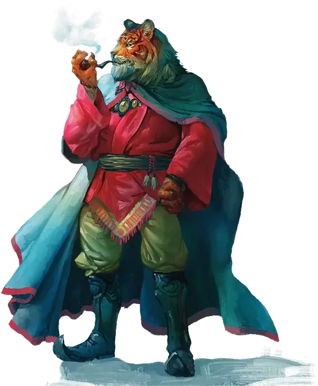

Ракшас
Rakshasa
Среднее Исчадие, законно-злое

Класс Доспеха 16 (природный доспех)
Хиты 110 (13к8 + 52)
Скорость 40 футов
| мод | спас | ||
|---|---|---|---|
| СИЛ | 14 | +2 | +2 |
| ЛОВ | 17 | +3 | +3 |
| ТЕЛ | 18 | +4 | +4 |
| мод | спас | ||
|---|---|---|---|
| ИНТ | 13 | +1 | +1 |
| МДР | 16 | +3 | +3 |
| ХАР | 20 | +5 | +5 |
Навыки Обман +10, Проницательность +8
Уязвимость к урону колющий от магического оружия, которым вооружены добрые существа
Иммунитет к урону дробящий, колющий, рубящий от немагических атак
Чувства тёмное зрение 60 футов, пассивное Восприятие 13
Языки Общий, Инфернальный
Опасность 13 (10000 опыта)
Бонус мастерства +5
Среда обитания Город
Особенности
Ограниченный иммунитет к магии. На ракшаса не действуют заклинания 6-го уровня или ниже, и они же не могут его обнаружить, если только он сам не желает, чтобы они на него подействовали. Он совершает с преимуществом спасброски от всех остальных заклинаний и магических эффектов.
Врождённое колдовство. Базовой характеристикой ракшаса является Харизма (Сл спасброска от заклинания 18, +10 к попаданию атаками заклинаниями). Ракшас может накладывать следующие заклинания, не нуждаясь в материальных компонентах:
• Неограниченно: волшебная рука [mage hand], малая иллюзия [minor illusion], маскировка [disguise self], обнаружение мыслей [detect thoughts];
• 3/день каждое: внушение [suggestion], невидимость [invisibility], обнаружение магии [detect magic], образ [major image], очарование личности [charm person];
• 1/день каждое: истинное зрение [true seeing], подчинение личности [dominate person], полёт [fly], уход в иной мир [plane shift];
Действия
Мультиатака. Ракшас совершает две атаки когтем.
Коготь. Рукопашная атака оружием: +7 к попаданию, досягаемость 5 футов, одна цель. Попадание: Рубящий урон 9 (2к6 + 2), и если цель — существо, она становится проклятой. Магическое проклятье вступает в действие каждый раз, когда существо совершает короткий или продолжительный отдых, наполняя мысли цели ужасными образами и грезами. Проклятая цель не получает преимуществ от окончания короткого и продолжительного отдыха. Проклятье длится до тех пор, пока не будет снято заклинанием снятие проклятия [remove curse] или подобной магией.
Описание
ПОЗОР ТЕБЕ, КОЛЬ УБЬЕШЬ МЕНЯ ОДНАЖДЫ.
ПОЗОР МНЕ, КОЛЬ УБЬЕШЬ МЕНЯ ДВАЖДЫ.
— ПРИНЦИП РАКШАС
Ракшасы в своем стремлении к господству над другими используют слабости и обман. Мало кто когда-либо видел этих исчадий в истинном облике, ибо они могут принимать любое обличие, какое только захотят, хотя предпочитают маскироваться под кого-нибудь могущественного или влиятельного, например, дворянина, кардинала или богатого купца. Истинный облик ракшаса сочетает в себе черты человека и тигра с одним примечательным недостатком: их ладони вывернуты в другую сторону, в отличие от человеческих.
Злые духи в смертной плоти. Ракшасы возникли давным-давно в Девяти Преисподних, когда могущественные дьяволы провели темный ритуал для освобождения своих сущностей из тел, чтобы сбежать с Нижних Планов. Ракшасы вошли на Материальный План для утоления своей тяги к человеческой плоти и злодейским интригам. Они выбирают свою жертву с осторожностью, стараясь сохранить свое присутствие в этом мире в тайне.
Зло возрождается. Для ракшаса смерть на Материальном Плане означает страшное и мучительное возвращение в Девять Преисподних, где его сущность остается в ловушке, пока его тело перерождается — процесс может занять месяцы или годы. Когда ракшас перерождается, он обладает всей памятью и знаниями своей прошлой жизни, и будет мстить тому, кто убил его. Если цели каким-то образом удалось избежать его хватки, ракшас может наказать семью убийцы, его друзей или потомков.
Как и дьяволы, ракшасы, убитые в Девяти Преисподних, уничтожаются навсегда.